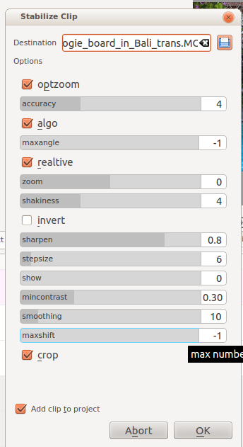
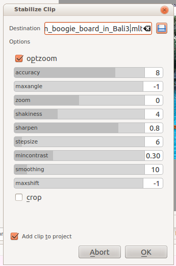

Stabilize¶
This menu item is available from View>Project Tree on a clip in the Project Tree or under the Project Menu menu when a clip is selected in the Project Tree.
This feature applies image stabilization algorithms to the clip which can reduce the shakiness of a bit of footage.
In versions 0.9.8 and earlier of Kdenlive, there were two different methods of stabilization available: vstab and transcode. In version 0.9.10, the vstab method was removed leaving us with just the “transcode” method (based on this work).
This video shows a side by side comparison between vstab and transcode stabilize methods.
Stabilize¶
This menu item was called stabilize (transcode) in versions 0.9.2 and earlier.
In version 0.9.3, the transcode GUI was simplified.
Based on the tooltips from this screen and the docs here, this is what all the options mean:
optzoom = use optimal zoom (calculated from transforms). Causes video to zoom until 90% of transformations are hidden. Default is checked. Hint: You can further zoom in with the zoom option.
accuracy = accuracy of shakiness detection. Should be >= shakiness factor. 1: low (fast processing). 15: high (slow processing). Default: 4. Recommended: 8.
algo = algorithm used. Checked = small measurement fields. Default = checked. Unchecked means use brute force algorithm. The brute force algorithm is deprecated and this option is not available after version 0.9.3.
maxangle = maximum angle to rotate in radians. Default = -1, which means no limit.
relative Unchecked = absolute transform (don’t use this). Checked = relative transform. Default is checked. This option is not available in version 0.9.3 - it uses relative transform.
zoom - Additional zoom during transform. Percentage to zoom > 0 = zoom in, < 0 = zoom out. The zoom specified here is in addition to the optimum zoom calculated by the program when optzoom is checked. Default = 0.
shakiness How shaky is the video? And how quick is the camera? 1: little (fast processing). 10: very strong/quick (slow processing). Default = 4. Note: large values may also reduce the accuracy. This is due to the internals of the movement-detection. Typically you don’t need a value greater than 7.
invert Invert the transform. Default = unchecked. Inverting the transform is pointless - leave unchecked. This option is not available in version 0.9.3.
sharpen Sharpen transformed image. Amount of sharpening: 0: no sharpening. Uses filter unsharp with 5x5 matrix. Default = 0.8.
stepsize Step size of search process. Region around minimum is scanned with 1 pixel resolution. Default = 6.
show 0 = draw nothing, 1 or 2 = show fields and transforms. Use 1 or 2 to preview what the process is going to do. example. Default = 0. Non-zero values of this parameter are not relevant in the Kdenlive implementation - use zero. This option is not available in version 0.9.3.
mincontrast Below this contrast, the field is discarded. Range 0-1. Default = 0.3. You may want to use a smaller value for a really low contrast clip.
smoothing Controls the amount of smoothing/stabilization. The larger the value for smoothing, the more camera movements are compensated. The resulting clip has a lower change in camera speed. Technically it is the number of frames for lowpass filtering = (smoothing * 2) + 1. For example, with a with 25 fps clip, a value of 12 for the smoothing factor means we would smooth over one second - 12 frames behind the current frame + the current frame (1) + 12 frames after the current frame. Default =10.
Demo of the difference here (top:3, bottom: 30).
maxshift Maximal number of pixels to translate image. Default = -1. No limit.
crop Unchecked means the border of the transformed frames contains the pixels from previous frames. Checked = black background. Default = unchecked.
Example of the effect of running stabilize - transcode from the original author - Georg Martius.
Side by side https://youtu.be/HYE3KAl8RAQ
Deshaked https://youtu.be/c3CEm8bgVQ0
Original https://youtu.be/cRA5H1LYzM4
===== stabilize (vstab) - version <=0.9.8 =====
This is based on this work and is not available in versions of kdenlive >= 0.9.10.
This tutorial shows how to use the stabilize feature - vstab version:
The “shutter angle” setting that the narrator says he does not know what it does (1:35) … Shutter angle is an angle that images could be maximum rotated for stabilization. see here.